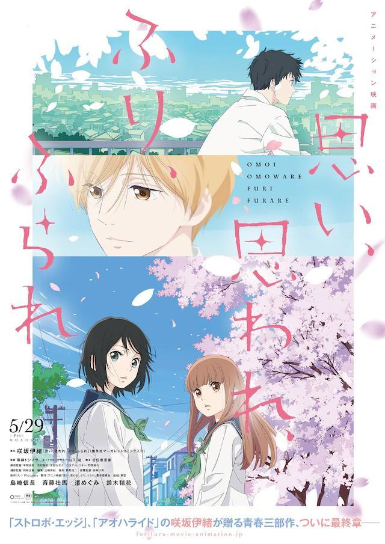
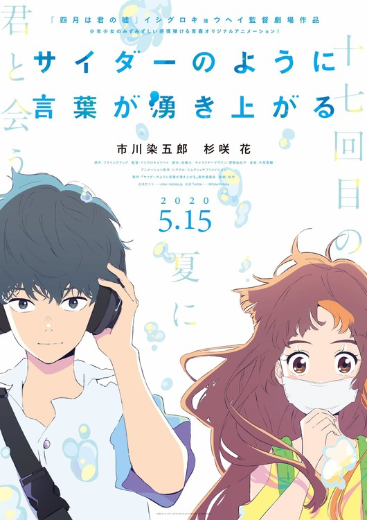
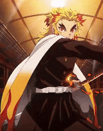
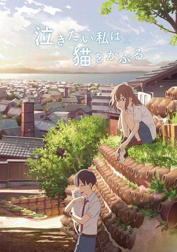

AKIHABARA
LAS PELICULAS DE ANIME QUE NO PUEDES DEJAR PASAR
Llegamos a la última parte y como dice el título les traigo las recomendaciones de películas que están próximas a estrenarse, espero que hayan disfrutado su recorrido y que le den una oportunidad a este maravilloso tipo de películas. |
 |
 Inicio Peliculas clásicas |
 Para llorar un rato |
 Nostalgia |
 Próximos estrenos |
Omoi, Omoware, Furi, Furare (29/05/2020)La historia se centra alrededor de Yuna y Akari que tienen dos puntos de vista muy diferentes sobre el amor: Yuna es alguien que ve el amor como un sueño y Akari es alguien muy realista acerca de sus opciones de romance. Mientras tanto, hay dos chicos, Kazuomi y Río, que también tienen diferentes puntos de vista de amor: Kazuomi es una cabeza hueca y no entiende el concepto de amor mientras que Rio agarra la oportunidad cuando se le confiesan, siempre y cuando la chica se vea linda. |  | ||||
Cider no Yo ni Kotoba ga Wakiagaru (15/05/2020)La historia chico conoce chica representa el como las palabras y la música unen a Cherry, un chico al que se le da mal socializar, y a Smile, una chica que se esconde tras una máscara. Se conocerán en un centro comercial normal y corriente situado en una ciudad provincial. |  | ||||
Kimetsu no Yaiba: The Infinity Train Arc (16/09/2020)La película adapta el Mugen Train Arc del manga. Enmu, la luna inferior uno, es enviado a matar a Tanjiro Kamado para que se convierta en una luna superior y reciba más sangre de Muzan Kibutsuji . Mientras tanto, Tanjiro, Zenitsu Agatsuma e Inosuke Hashibira deciden comprar boletos para abordar el Tren Infinito y unirse a Kyojuro Rengoku, el Pilar de la llama, con la esperanza de aprender más sobre la Danza del Dios del Fuego. |  | ||||
umibe no etranger(11/09/2020)La historia de Un extraño a la orilla del mar narra la historia de Shun Hashimoto, un futuro novelista que conoce a Mio Chibana, un tímido estudiante de secundaria, en Okinawa. Mio se pasa las tardes sentado en un banco frente a la playa, muy cerca de la casa de Shun. Lentamente, entablan una relación que los une cada día más. Sin embargo, Mio decide abandonar la isla para continuar sus estudios… Tres años más tarde, Mio regresa con una sorprendente y sentida confesión. |  |
||||
Nakitai Watashi wa Neko wo Kaburu (05/06/2020)La historia original sobre encontrar el verdadero yo se desarrolla en Tokoname, Aichi y se centra en Miyo Sasaki. Es una peculiar estudiante de segundo año de secundaria que se enamoró de su compañero de clase Kento Hinode. Miyo persigue resueltamente a Kento todos los días, pero él no la nota. Sin embargo, mientras lleva un secreto que no puede contarle a nadie, Miyo continúa persiguiendo a Kento. Miyo descubre una máscara mágica que le permite transformarse en un gato llamado Taro. La magia le permite a Miyo acercarse a Kento, pero eventualmente también puede hacer que no pueda transformarse de nuevo en un humano |  |
Inicio Peliculas clásicas |
Para llorar un rato |
Nostalgia |
Próximos estrenos |